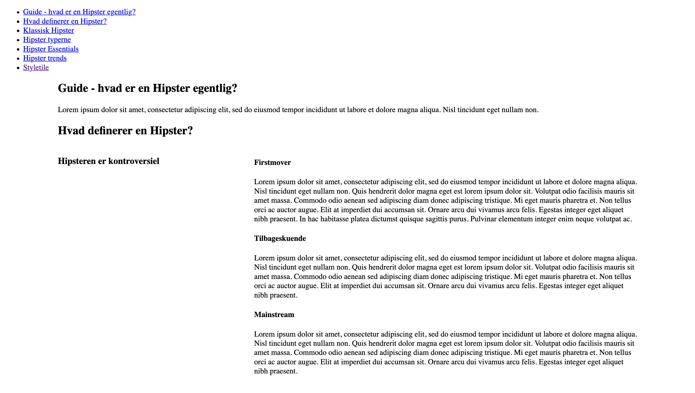
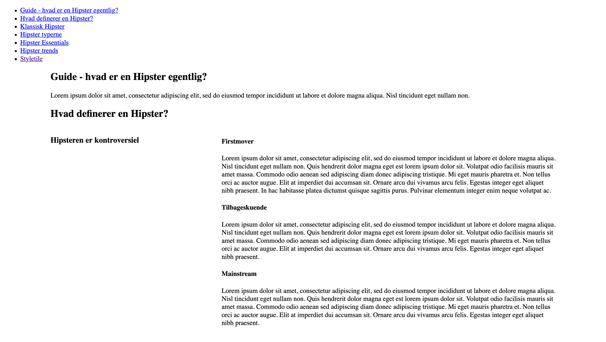
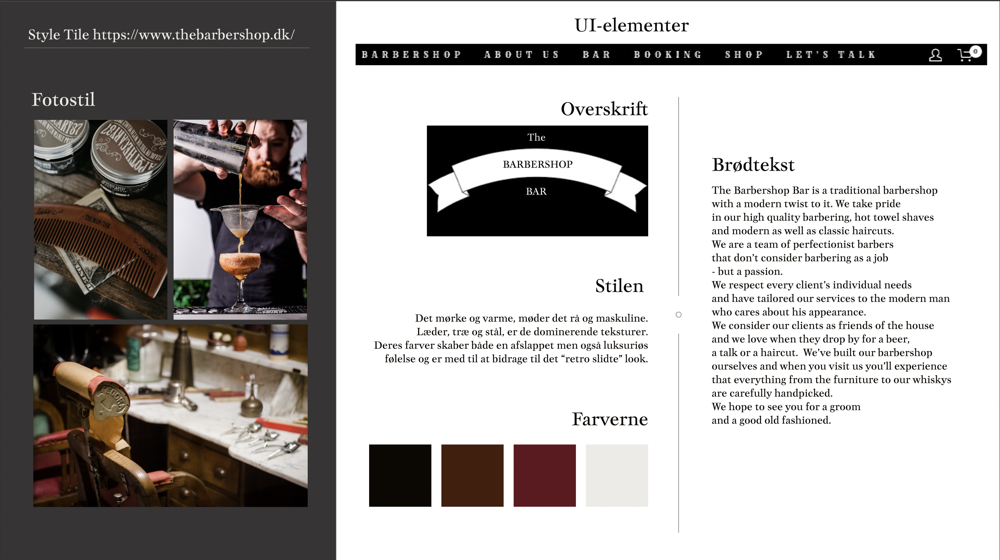
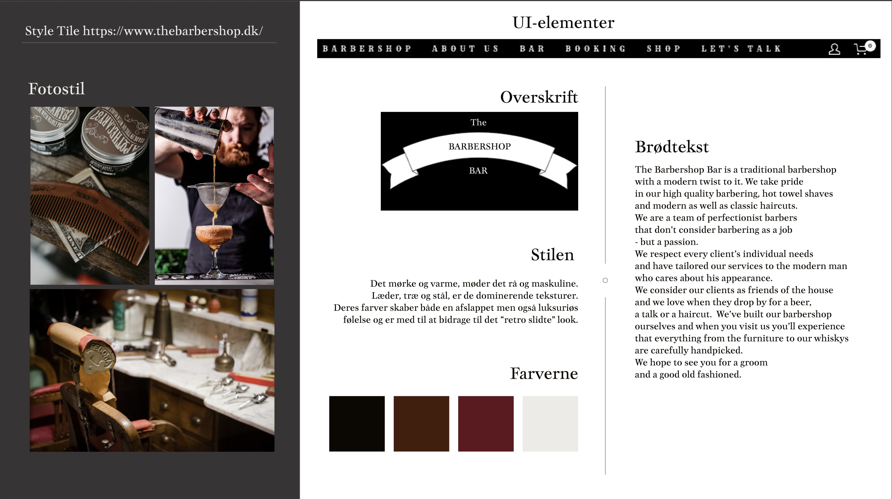

 

02.04.02 responsive_site_v2
I dette tema blev vi blev introduceret til grundlæggende faglige begreber inden for design af digitale brugergrænseflader, digital indholdsproduktion, digital kommunikation og responsivt webdesign.
Vi har blandt andet lært at sætte websider op i html og css og fået en basisviden om blandt andet billedbehandling i programmer som Photoshop og opsætning af tekst og billeder i Adobe XD.
Se projektet herRefleksioner
Jeg havde hipster stilen og da vi skulle lave vores version 2 af websitet tog jeg munden lidt for fuld og begyndte at lave hele mit design om. Hvilket resulterede i at jeg ikke nåede at blive færdig.